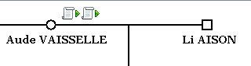
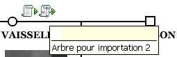
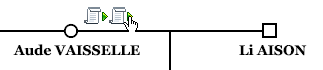

Contenu du fichier - Liens entre les fichiers - Utilisation du fichier PDF
La génération de fichier PDF vous permet d'obtenir votre arbre dans un fichier PDF. Vois pouvez alors donner ce fichier à qui vous voulez, car il est consultable sans avoir besoin du logiciel Généamania ni GénéGraphe. En même temps, vous pouvez générer des fiches individuelles, suivant le paramétrage que vous aurez fait. Vous pouvez aussi donner ces fichiers à qui vous voulez.
Le fichier PDF contient éventuellement plusieurs pages. Si votre arbre contient plusieurs pages, chacune d'elles sera générée indépendamment dans le fichier PDF. Les pages sont générées en commençant par la première ligne puis par la ou les suivantes. Voici l'ordre des pages dans le fichier PDF d'un arbre qui contient 3 pages en largeur et 2 pages en hauteur.
|
1
|
2
|
3
|
|
4
|
5
|
6
|
Quand une personne se trouve dans plusieurs arbres, GénéGraphe ajoute dans chaque arbre des icônes pour montrer les liens qui existent entre eux.

Dans cet exemple, Aude VAISSELLE est présente dans deux autres arbres alors que Li AISON n'est représentée dans aucun autre arbre.
Ces icônes figureront dans le fichier PDF généré et permettront de passer d'un fichier à l'autre.
Quand vous affichez le fichier PDF généré, vous avez les mêmes icônes que dans GénéGraphe. Quand le curseur se place sur l'icône en forme de parchemin, Acrobat Reader vous affiche le nom du fichier PDF où est définie cette personne.

Quand vous cliquez sur la flèche verte, le curseur change de forme (il devient une main) et, en cliquant, vous ouvrez le fichier PDF.
